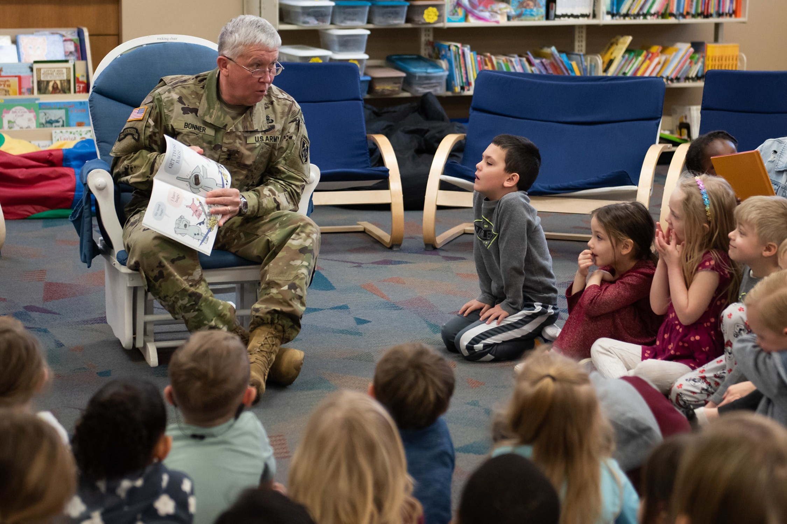

Read Across America
Expanding Educational Outreach Through Community Partnerships

Research & Planning
When I assumed responsibility for coordinating Fort Leonard Wood's Read Across America initiative in 2020, participation was limited to one school district.
Recognizing an opportunity to expand the installation's educational outreach, I developed a scalable approach to increase school participation while maintaining consistent communication and manageable volunteer coordination.
I independently contacted school administrators, established relationships with participating districts, and assessed classroom participation and volunteer requirements.
Implementation
Working with military operations personnel, I coordinated installation-wide volunteer recruitment through formal military tasking procedures.
I served as the primary point of contact for participating Soldiers, managing registration, assignments, scheduling, school locations, and communication with administrators. I also developed recurring email outreach and reminder campaigns to maintain participation and ensure volunteers were prepared.
During COVID-19 restrictions, I adapted the 2021 initiative to virtual delivery, coordinating the production of recorded reading videos. Following each annual event, I compiled participation data, evaluated year-over-year growth, and prepared after-action reports for leadership.
Results & Program Impact
- 18,000+ Students reached across regional school districts
- 940 Classrooms served during annual visits
- 360+ Soldier volunteers coordinated across program years
Expanded participation across regional schools and districts to establish a scalable annual outreach framework. The initiative became one of Fort Leonard Wood's largest recurring community outreach programs.